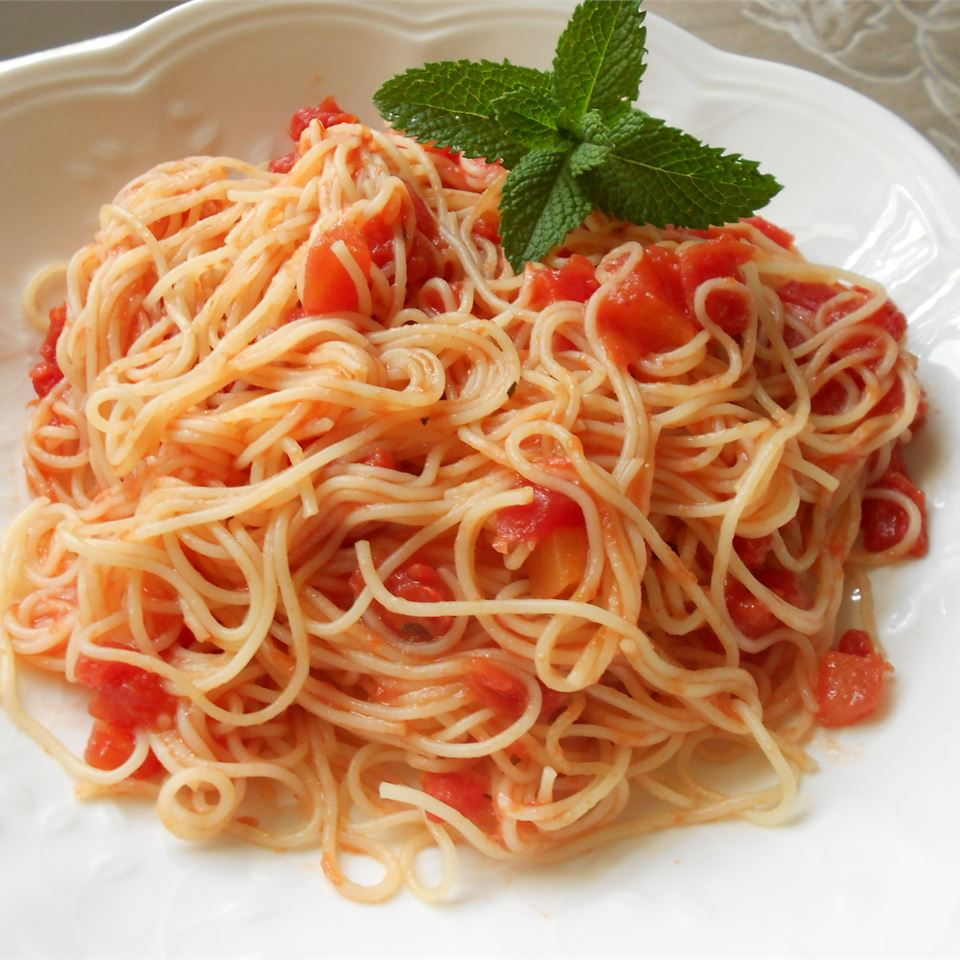

Tomato and Garlic Pasta

Description
Who doesn't love some good pasta!? Now this recipe is really easy
to make. Star of the shows being tomatoes, cheese, garlic and basil
(and of course pasta haha!)
Ingredients
- 8 ounce angel hair pasta
- 2 pounds tomatoes
- 4 cloves crushed garlic
- 1 tablespoon olive oil
- 1 tablespoon chopped fresh basil
- 1 tablespoon tomato paste
- salt to taste
- ground black pepper to taste
- 1/4 cup of Parmesan cheese
Steps
- Place tomatoes in a kettle, and pour in cold water and then
boil the water. After you are done boiling the tomatoes,
drain the water from the kettle and pour cold water again.
Then peel the tomatoes and cut them into small pieces
- Cook the pasta in a large pot of boiling salted water
- In a large skillet or saute pan, saute the garlic in enough
olive oil to cover the bottom of the pan. The garlic should
become opaque, not brown. Stir in the tomato paste.
Immediately stir in the tomatoes, salt and pepper.
Reduce the heat, simmer until the pasta is ready and then
add some basil.
- Drain the pasta. Toss the pasta with a couple of tablespoons
of olive oil, and then mix the sauce we just made. Reduce the
heat as low as possible. Keep the pasta warm and uncovered
for 10 minutes when its ready to serve. Garnish generously
with fresh Parmesan cheese.